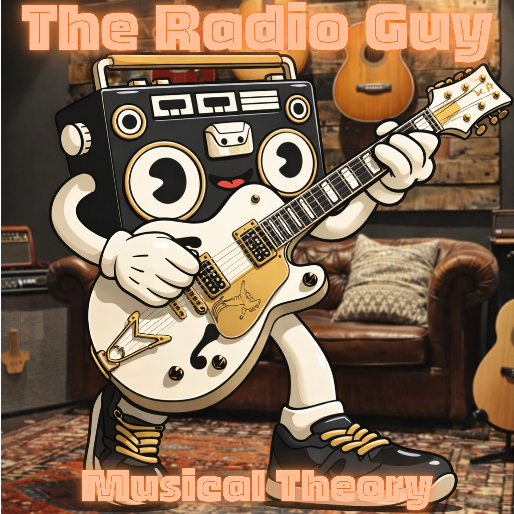

Now Playing · 88.8 FM Lofi
THE RADIOGUY.
Lofi beats made to slow your mind down — the perfect soundtrack for studying, working, or simply taking a slower breath.

Lofi beats made to slow your mind down — the perfect soundtrack for studying, working, or simply taking a slower breath.
The Radio Guy is the lofi project of a boombox that decided to wander the world. Every track is built from vinyl loops, dusty keys, and rain recorded through an open window—the perfect soundtrack for anyone who needs to focus without losing the atmosphere.
